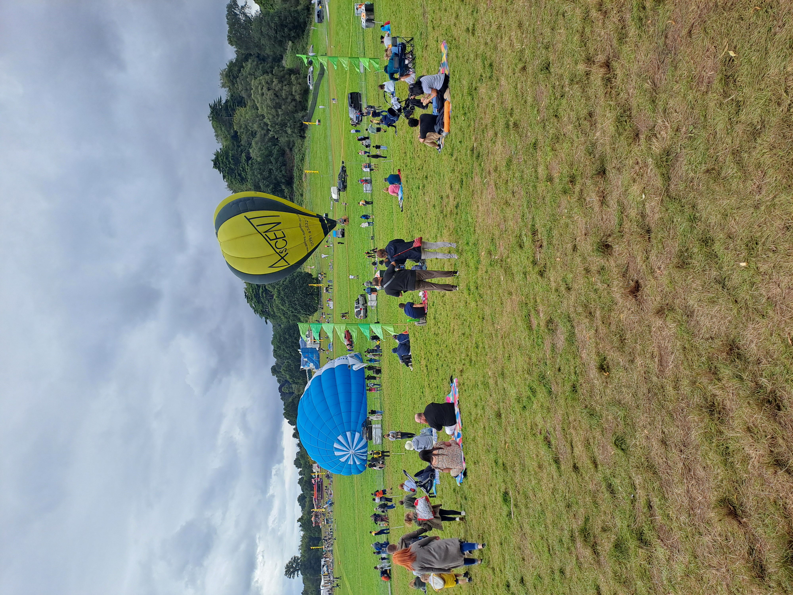
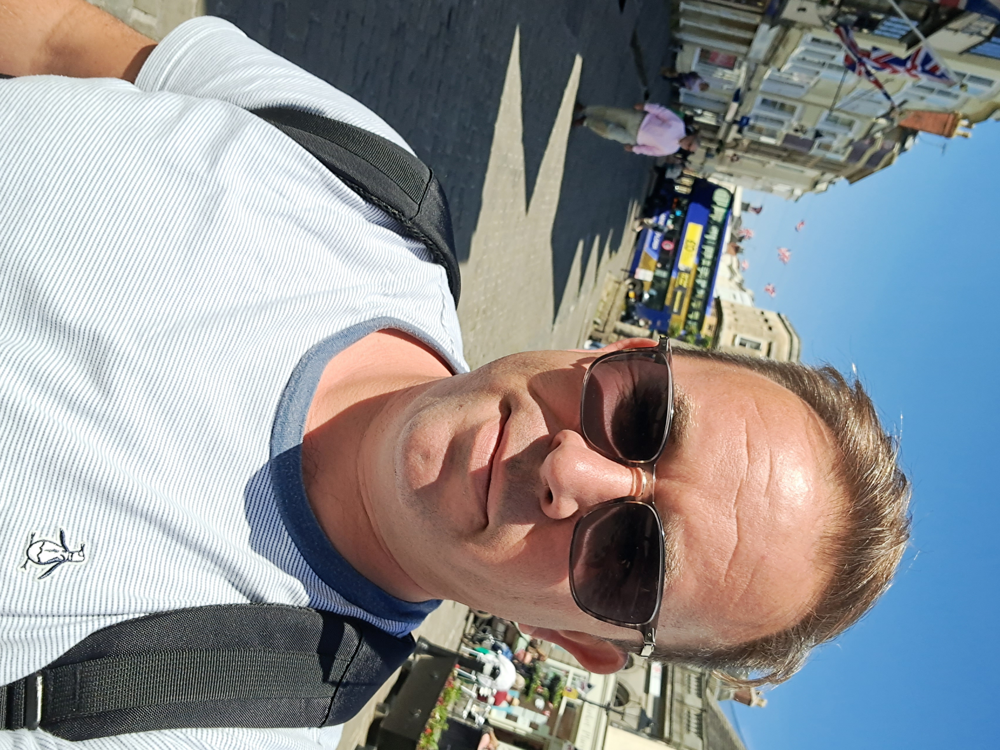
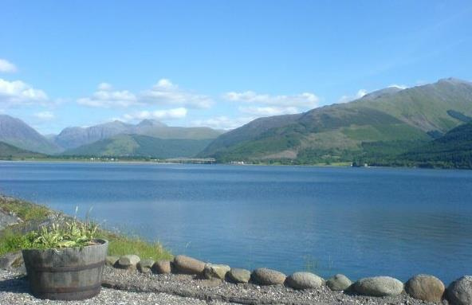

Chapter I
Professional Profile
How I operate in regulated environments, with emphasis on discretion, service continuity and practical standards.
Open chapter
Chapter III
Alongside formal roles, I maintain practical projects - writing, web publishing, planning systems and digital organisation. I am also involved with my Church community. These projects are designed to improve clarity, to learn and engage - not add complexity life.
They also provide a structured way to test methods I later apply in operational and administrative work.

Current Work
I build and maintain small websites, including the ongoing 'WayLight project', with emphasis on accessible structure, low-complexity design and clear editorial organisation.
I maintain documentation and planning frameworks for both personal and professional use, including process notes, analysis logs and reusable templates for recurring operational work.
I also use modern digital tools, including AI-assisted drafting and organisation support, in a controlled and accountable way to reduce friction in routine tasks while maintaining judgement and oversight. I enjoy testing old and new methods - I have a great interest in the monastic system - who could argue with a system that has worked for 1800 years or so!
Additional long-term interests include language learning (Irish, French, German, Spanish - all of which I have experience with to varying degrees), parish and wider Catholic organisation volunteering (CAFOD, Marys Meals), seasonal food growing - I'm obsessed with digging for victory - and long-distance walking routes and pilgrimages.
Chapter Pages
Chapter I
How I operate in regulated environments, with emphasis on discretion, service continuity and practical standards.
Open chapterChapter II
Career progression across NHS administration, information security, technical support, customer operations and legal administration.
Open chapterChapter III
Current focus in writing, documentation systems, low-complexity web build and responsible use of digital tools.
Open chapterIdeas take shape through reflection, perspective, and practical follow-through.
